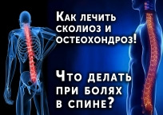
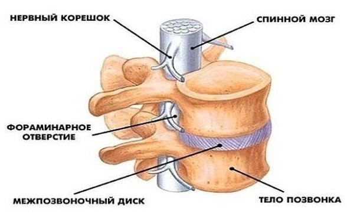
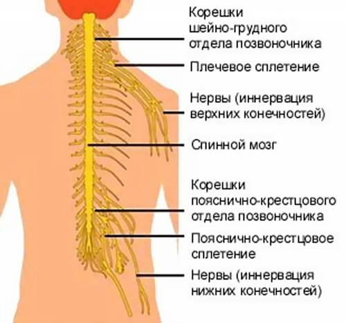
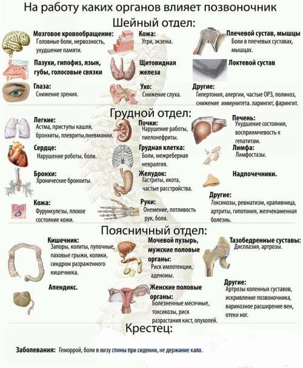

Що таке остеохондроз хребта? Симптоми, види, методи лікування Остеохондроз: симптоми, методи лікування і профілактичні заходи
За статистикою, остеохондроз хребта є одним з найпоширеніших захворювань. Від цієї недуги страждає кожна третя людина на землі, але звертається до лікаря тільки половина з них.
Багато хто думає, що остеохондроз хребта — природний наслідок старіння організму. Це вірно. Але також вірно і те, що це захворювання може виникнути і в більш молодому віці.
Лікування остеохондрозу необхідно почати якомога раніше — тільки в цьому випадку можна попередити подальший розвиток цього захворювання.
Остеохондроз властивий тільки людині — ми, таким чином, розплачуємося за можливість ходити на двох ногах. Навантаження, яку відчуває хребет в той час, коли ми стоїмо, ходимо або сидимо, набагато вище, ніж у тварини. І саме тому остеохондроз хребта можна вважати хворобою цивілізації.
Що ж таке остеохондроз хребта?
У перекладі з давньогрецької, osteon — кістка, chondro — хрящ, а os — дегенеративні зміни. Тобто, грубо кажучи, це зношування кістки і хряща. Структура хребта дуже складна і функціонально максимально продумана. Між хребцями, які становлять хребетний стовп, знаходяться диски, особливі хрящові структури, що забезпечують амортизацію будь виникає навантаження.
При остеохондрозі ці диски стоншуються і деформуються, хрящова тканина стає менш еластичною, більш грубою. Через те, що диск стає «плоским», відстань між хребцями зменшується і виникає защемлення нервових корінців спинного мозку.
При подальшому розвитку захворювання, патологічні зміни починають відбуватися і в самих хребцях, а відсутність оптимальної амортизації завдає серйозної шкоди хребту — він втрачає гнучкість, що дозволяє нам вільно рухатися.
Причини розвитку остеохондрозу хребта
Спадковість ь. Якщо ваші батьки страждають від остеохондрозу, це не означає, що ви зі 100% гарантією незабаром відчуєте на собі всі «принади» цього захворювання. Але, цілком можливо, що у спадок можуть перейти особливості хрящової тканини, її фізико-хімічні властивості, структура міжхребцевого диска. І це, в комплексі з іншими факторами ризику, може послужити розвитку остеохондрозу хребта.
Постійні і одноманітні фізичні навантаження. Це стосується не тільки вантажників і спортсменів-важкоатлетів, але, як не дивно, балерин, офісних працівників і продавців. Що спільного між цими професіями? Перевищення допустимого навантаження на хребет, постійні й одноманітні рухи, тривале перебування в одній і тій же позі — все це є фактором ризику.
Хвороби і травми спини. Будь аномалія хребта — внаслідок інфекції, механічного пошкодження або судинної патології, порушує процес нормального харчування диска, призводить до нерівномірного розподілу навантаження і, в підсумку, до захворювання.
Але, як правило, для того щоб остеохондроз хребта почав розвиватися, потрібно сукупність декількох факторів. А посилитися захворювання може під впливом стресу або переохолодження.
Для точної постановки діагнозу необхідно звернутися до фахівця — лікаря-невролога, ортопеда або вертебрології. Повне комплексне обстеження включає в себе рентгенографію, комп’ютерну томографію та магнітно-резонансну томографію. Все це допомагає з’ясувати стадію розвитку захворювання, рівень ураження, виявити приховані патології. На підставі цих даних, лікар підбирає ефективне і адекватне лікування.
Види остеохондрозу
Поперековий остеохондроз. Шийний остеохондроз. Грудний остеохондроз
Остеохондроз поперекового відділу хребта
Остеохондроз поперекового відділу хребта є найпоширенішим видом захворювання. Це пов’язано з тим, що поперековий відділ приймає основне навантаження ваги, і дій, пов’язаних з перенесенням важких речей, нахилами, поворотами. До того ж, саме остеохондроз поперекового відділу стає предтечею виникнення протрузій і гриж міжхребцевих дисків.
У попереково-крижовому відділі хребта знаходяться нерви, які відходять до ніг і сідниць. І саме там локалізується біль, коли починається утиск нервових закінчень в області попереку. Головною ознакою розвитку захворювання є больові відчуття в ураженій області. Біль може бути ниючим або стріляючої, мати характер нападів або бути присутнім постійно. Як правило, больовий синдром посилюється при русі. Клінічна картина поперекового остеохондрозу також включає в себе ослаблення м’язів і зміна постави.
Одним із симптомів захворювання є люмбаго (простріл) — різка, гострий біль, який раптово виникає в момент нахилу або підняття тяжкості. При цьому в поперековому відділі виникає м’язовий спазм — людина просто не в змозі прийняти нормальне положення.
Ще один больовий синдром при остеохондрозі поперекового відділу — люмбоішалгія. Виникає при затисканні спинномозкового нерва і поширюється на задню поверхню сідниці, стегна, на гомілку і стопу. Також з’являються хворобливі відчуття при дотику до шкірних покривів.
При появі цих синдромів необхідно здатися лікареві і якомога швидше почати лікування остеохондрозу хребта.
Симптоми остеохондрозу поперекового відділу
Симптоми остеохондрозу поперекового відділу проявляються в залежності від стадії розвитку захворювання. На самому початку хвороби, це, як правило, невеликі хворобливі відчуття в спині, які можуть посилюватися при різких рухах.
При розвитку остеохондрозу больовий синдром починає виявлятися частіше, він гостріше, ніж у початковій стадії захворювання і віддає в ногу. До того ж, в цей період виникають і інші реакції організму на деформацію міжхребцевих дисків — перепади температури тіла, потовиділення, відчуття поколювання і оніміння.
При запущеній стадії захворювання, больовий синдром стає постійним і інтенсивним, що призводить до обмеження в рухах. Деформація хребта до цього часу досягає такої стадії, що стає помітна навіть при поверхневому огляді.
Лікування остеохондрозу поперекового відділу
Якщо вам діагностували поперековий остеохондроз, лікування передбачає комплексний підхід, який включає в себе як медикаментозні, так і немедикаментозні способи.
Медикаментозні методи лікування остеохондрозу хребта спрямовані на зняття больового синдрому — широко поширене застосування анальгетиків, знеболюючих препаратів, болезаспокійливих блокад.
У консервативній терапії використовуються:
Вчасно проведена діагностика захворювання і застосування повного комплексу необхідних процедур приводить в норму циркуляцію крові, усуває її застій в поперековому відділі, спазми м’язів і судинний набряк. Також проведення лікування покращує живлення міжхребцевих дисків, відновлює нормальний перебіг обмінних процесів.
Профілактичні заходи
Зміцнення м’язового корсета (плавання, адекватна фізичне навантаження)
Ортопедична профілактика (правильно підібраний матрац, щоденна гімнастика)
Для запобігання загострень остеохондрозу поперекового відділу необхідно уникати різких рухів і нераціональної фізичного навантаження, не переохолоджуватися, не перебувати довго в одній позі. Щоб не допустити подальшого розвитку захворювання, лікування остеохондрозу хребта необхідно почати якомога раніше.
Остеохондроз шийного відділу хребта
Шийнийостеохондроз — другий за популярністю з видів цього захворювання. Кожен, хто пов’язаний з сидячою роботою, коли-небудь відчував біль в шиї. Але біль — це тільки найменше, чим може «відгукнутися» розвиток шийного остеохондрозу.
Шийний відділ є найбільш рухомий областю хребта, що дозволяє нам крутити головою, повертатися і нахилятися. Але через таку рухливості хребці і диски в цьому місці найбільш вразливі. Навіть незначні патологічні зміни можуть привести до порушення роботи цілого відділу.
Все це ускладнюється тим, що в області шиї знаходиться дуже велика кількість судин і нервів. Крім того, через шийні хребці проходять канали хребетних артерій, спрямованих в порожнину черепа. Шийний відділ хребта є не тільки важливою ланкою при передачі імпульсів від голови до тіла, він через хребетні артерії постачає кров’ю головний мозок. Зміни, що відбуваються в хрящових структурах шийного відділу при остеохондрозі, призводять до збою в роботі цієї артерії і, як наслідок, виникає порушення кисневого живлення мозку.
Недостатнє надходження кисню в мозок призводить до того, що мозок, який покликаний регулювати роботу вестибулярного апарату, дає збій — виникають головні болі і запаморочення. Також порушення нормального кровопостачання відбувається і у вегетативних, життєво важливих центрах.
Ознаки, які можуть говорити про розвиток шийного остеохондрозу:
Також потрібно стежити за кольором шкірних покривів — це теж може бути наслідком порушення кровообігу в мозку. Занадто блідий, сірий колір обличчя говорить про поганий надходженні артеріальної крові, а зайво темний — про незадовільний відтік венозної.
Основні симптоми остеохондрозу шийного відділу
Біль в області шиї, яка поширюється на потилицю, лопатку або руку
Порушення чутливості (оніміння) шкіри передпліччя, кисті
Однією з причин розвитку шийного остеохондрозу є постійне перебування в незручній позі — з похиленою головою, згорбившись. При такому положенні відбувається деформація міжхребцевого диска, починають утворюватися остеофіти. Це є причиною зменшення відстані між хребцями і защемлення нервів і судин.
Для запобігання ускладнень дуже важливо вчасно почати лікування остеохондрозу хребта.
Лікування остеохондрозу шийного відділу хребта
При діагнозі «остеохондроз шийного відділу», лікування спрямоване на відновлення функцій шийного відділу хребта, позбавлення пацієнта від больових відчуттів і недопущення переродження остеохондрозу в грижу міжхребцевого диска.
Якщо у вас шийний остеохондроз, лікування може бути медикаментозне і немедикаментозне.
Медикаментозне лікування при шийному остеохондрозі включає в себе прийом знеболюючих, протизапальних, протинабрякових препаратів. Також в комплексне медикаментозне лікування остеохондрозу хребта шийного відділу входять різні ліки для поліпшення кровообігу і розслаблення м’язів. Але подібним лікуванням слід займатися тільки після консультації з лікарем. Не потрібно самостійно займатися підбором ліків.
Немедикаментозне лікування остеохондрозу хребта включає в себе великий комплекс процедур.
Фізіотерапевтичні методи (електрофорез, лікування за допомогою ультразвуку, струму, магнітотерапії)
Лікувальна гімнастика (залежить від стадії захворювання і підбирається індивідуально для кожного пацієнта інструктором з лікувальної фізкультури)
Профілактичні заходи
Остеохондроз шийного відділу хребта в початковій стадії не доставляє особливих проблем. І дуже важливо саме в цей період розпочати профілактичні дії для запобігання подальшого розвитку захворювання.
Остеохондроз грудного відділу хребта
За статистикою, грудної остеохондроз зустрічаєтьсянабагато рідше, ніж шийний або поперековий. Це можна пояснити тим, що цей відділ хребта не особливо рухливий — він укріплений каркасом грудної клітини і менше схильний до різних травматичним факторам. Завдяки такому захисті, в цій галузі рідше відбувається утворення міжхребцевих гриж і зміщення хребців. Але саме грудний відділ найчастіше піддається різним деформаціям — сколіоз, гіперкіфоза, лордоз зустрічаються досить часто. І саме ці захворювання можуть стати причиною розвитку остеохондрозу грудного відділу хребта.
Основні симптоми грудного остеохондрозу
Біль в межлопаточной області, «відстрілювати» в міжреберні м’язи Як правило, хворобливі відчуття стають яскравішими при русі, глибоких зітхання, при довгому знаходженні в одній позі. Іноді може виникати відчуття оніміння (відбувається порушення чутливості), виникають «мурашки», печіння, скутість в м’язах.
Біль у грудній клітці Можлива поява больового синдрому в ділянці серця, печінки, порушення роботи кишково-шлункового тракту.
При розвитку грудного остеохондрозу можуть виникнути вертебральні синдроми — дорсаго і дорсалгия.
Дорсаго — хворобливі відчуття, які виникають раптово і відрізняються яскравим проявом. При дорсаго спостерігається напруження м’язів грудного відділу, стає неможливо вільно рухатися і спокійно дихати. Найчастіше проявляється у тих, хто більшу частину часу проводить в сидячому положенні.
Дорсалгия характеризується поступовим виникненням болю. Як правило, вони не мають яскраво вираженого характеру, але доставляють неприємні відчуття і дискомфорт. Можуть посилюватися при нахилах і глибоких зітхання, при довготривалому одноманітному положенні тіла. Також присутня напруга м’язів і обмеження в рухах.
Остеохондроз грудного відділу хребта може стати причиною захворювань серцево-судинної системи — патології серцевих судин і дистрофічного зміни серцевого м’яза. Це пов’язано з постійним роздратуванням рецепторів шийного та грудного відділу хребта.
Лікування остеохондрозу грудного відділу
При діагнозі «остеохондрозу грудного відділу хребта», лікування спрямоване на зменшення хворобливих відчуттів і на недопущення рецидиву захворювання.
При загостреннях, як правило, призначається медикаментозне лікування остеохондрозу хребта для зняття больового синдрому, зменшення запалення і розслаблення м’язів.
Лікування грудного остеохондрозу консервативними методами включають в себе різні процедури:
Витягнення хребта (збільшує відстань між хребцями, звільняє корінці спинного мозку, відновлює нормальний кровообіг, зменшує набряк)
Лікувальна фізкультура (зміцнює м’язовий корсет, покращує рухливість грудного відділу)
Мануальна терапія (знімає біль, відновлює циркуляцію крові)
Фізіотерапія (зменшує запальні процеси і больовий синдром)
Масаж (знімає м’язову напругу, покращує кровообіг)
Профілактичні заходи
Для профілактики остеохондрозу грудного відділу хребта необхідно в обов’язковому порядку зайнятися лікуванням супутніх йому захворювань (сколіозу, гіперкіфоза та ін.) Також необхідно уникати травм, не піддавати хребет серйозному навантаженні, не перебувати довго в одному положенні. Поліпшення умов на роботі і вдома (правильно підібраний матрац, робоче крісло), гімнастика та курси масажу також допоможуть не допустити розвиток захворювання.
Ігнорування захворювання, небажання звертатися до лікаря з цією проблемою, може призвести до виникнення різних ускладнень. Одне з таких ускладнень — стеноз. При розвитку стенозу починається патологічне звуження центрального хребетного каналу, з’являються остеофіти (те, що в народі називається «відкладення солей»). Вони займаютьпростір в спинно-мозковій каналі, що приводить до тиску на спинний мозок і його корінці. Так як процес розвивається повільно, так само повільно розвиваються і клінічні симптоми — слабкість в ногах, падіння шкірної чутливості, поява печіння в промежині.
Це ускладнення досить серйозне, тому що людина поступово починає втрачати здатність нормально рухатися — аж до інвалідного крісла.
Існує рішення цієї проблеми — оперативне лікування, що полягає в тому, що відбувається звільнення спинно-мозкового каналу.
Лікарі клініки «Союз» мають високу кваліфікацію для того, щоб вчасно і правильно діагностувати це захворювання. Досвідчені нейрохірурги ефективно проведуть складну операцію і повернуть вас до активного життя.
Як не допустити остеохондрозу?
Слід з особливою увагою ставитися до свого хребта.
У світі поки що не придумали спосіб повного лікування від остеохондрозу — можна лише загальмувати процес його розвитку.
Але якщо прислухатися до порад лікарів і, починаючи з самого дитинства, виконувати нескладні дії, можна уникнути хвороби.
Що ж потрібно робити, щоб не допустити виникнення остеохондрозу?
Пряма спина — це не тільки гарна постава, це запорука здоров’я хребта. Якщо у вас сидяча робота, ви повинні з особливою ретельністю стежити за тим, в якому положенні ви знаходитесь в кожен момент часу. Підберіть правильний стілець — занадто м’яке крісло може нашкодити. Слід уникати напруги м’язів під час сидіння — плечі і шия повинні бути розслаблені, а навантаження з попереку знята. Не сидіть довго в одному положенні — міняйте позу, частіше вставайте і розминайте м’язи, знімайте статичне навантаження з хребта.
Якщо ви довго стоїте, поперековий відділ хребта випробовує серйозні навантаження, тому потрібно постійно міняти позу, рухатися. Добре знімає втому спини легке вправа — прогнутися назад, витягнути руки і глибоко подихати.
Оптимально влаштоване місце для сну допоможе уникнути багатьох проблем. Відмовтеся від пишних і м’яких ліжок і зупиніть свій вибір на напівжорсткими матрацами, щоб під час сну ваш хребет зберігав фізіологічні вигини. Подушка повинна бути невеликого розміру і добре підтримувати шию.
Найголовніше — ніколи не піднімайте тяжкості одним ривком і не несіть їх перед собою, прогнувшись у попереку. Однією з причин утворення міжхребцевих гриж і остеохондрозу є недотримання цих правил. Найкраще сісти навпочіпки і, тримаючи спину прямою, повільно підняти тягар. Не допускайте перекосів — нести щось важке краще в обох руках, рівномірно розподіляючи навантаження.
М’язи спини і преса завжди повинні бути в тонусі, тому необхідно підтримувати хорошу форму — плавати, бігати, робити гімнастику.
При появі неприємних відчуттів в спині, болю і дискомфорту, ви повинні звернутися до лікаря — вчасно діагностоване захворювання дозволить швидко почати лікування остеохондрозу хребта і уникнути погіршення ситуації.
Зайва вага є чинником ризику — повні люди піддають свій хребет зайвого навантаження. Збалансоване харчування і регулярний прийом вітамінів також є профілактичним заходом для попередження розвитку захворювання.
По матеріалам сайта : http://elikar.pp.ua/



Как избежать проблем с позвоночником?
9 ЗОЛОТЫХ ПРАВИЛ!
Для предотвращения образования грыж межпозвонковых дисков, следует соблюдать несколько правил.
Если у вас уже есть остеохондроз, вам не стоит поднимать больше 10 кг.
1. Перед физической нагрузкой выпейте воды или ещё чего ни будь, в обезвоженном организме,
диски не могу впитать достаточное количество влаги.
2. Помассируйте спину, это разгонит кровь и ускорит обменные процессы.
3. Если вам предстоит поднимать тяжёлые вещи, желательно воспользоваться поясом штангиста.
4. Ни когда не поднимайте и не держите предметы на вытянутых руках, это в десятки раз
увеличивает нагрузку на позвоночник. Для поднятия предмета садитесь на корточки,
а потом вставайте вместе с ним. Позвоночник должен оставаться прямым.
5. После каких либо нагрузок на позвоночник желательно повисеть, если работать
приходиться длительное время, висеть следует периодически, если нет возможности
повисеть, хотя бы потянитесь, подняв руки вверх.
6. Избегайте резких движений, особенно поворотов туловища при наклоне.
7. Старайтесь равномерно распределять нагрузку, то есть не носите сумки
в одной руке и т.д., если приходится нести предмет перед собой,
держите его как можно ближе к телу, и передавая его, не вытягивайте руки вперёд.
8. При уборке квартиры и т.д. старайтесь, как можно меньше находиться в
согнутом состоянии и как можно меньше наклоняться.
9. При переноске тяжестей, особенно на большие расстояния, желательно
воспользоваться тележкой, сумкой, чемоданом на колёсиках или рюкзаком.